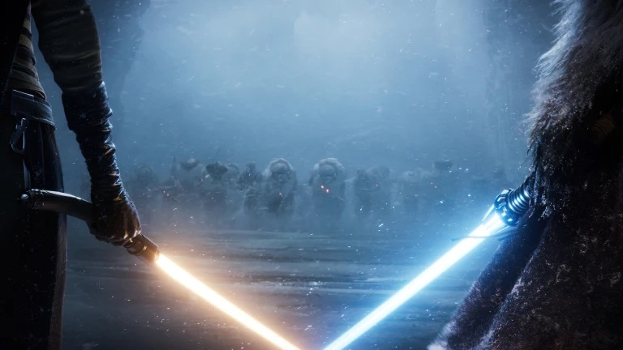
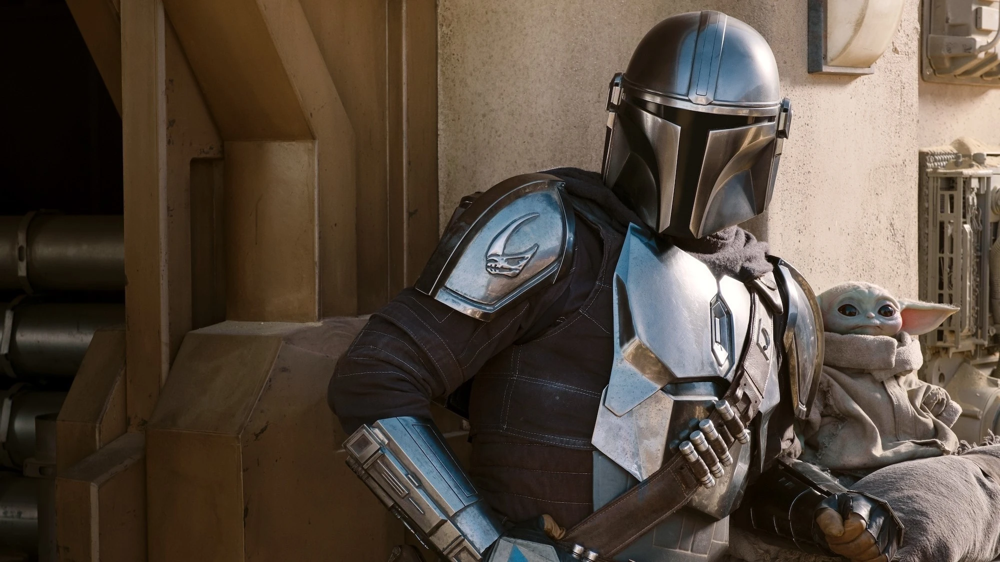
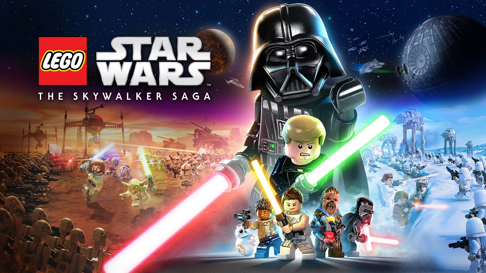

Star Wars Rogue One gets HISTORICAL re-release
Upcoming spin-off Andor is set to expand the story of Rebellions.
To promote the new Disney+ series Lucas Films will re-release
Star Wars Rogue One in theaters. Rogue One's return to theaters
marks the first time that Disney is re-releasing a movie to promote an upcoming Disney+ series.
Fandango officially revealed that Lucasfilm will re-release Star Wars: Rogue One
in select IMAX theaters on Friday, August 26 to promote the film's Disney+ spin-off, Andor.
Fans attending the theatrical re-release will also be treated to an exclusive look at Andor
ahead of its September premiere.
By: Santino Enriquez
August 15 2022
Read More

Obi Wan Kenobi might not get second season
While the actors are all in on “Obi-Wan” Season 2, the show's creative team is acting a bit more hesitant.
Producer and director says :“For this one, we really did conceive it to be a limited series.
It really is one big story with a beginning, middle and end.
By: Kien Cresswell
July 18 2022
Read More

Star Wars will movie thats set after the sequel trilogy
Lucasfilm President Kathleen Kennedy reveals there will be movies that takes after the events of the Skywalker
trilogy. "Kennedy revealed when on the in-universe Star Wars timeline these upcoming movies will likely take place.
around and beyond the Sequel Trilogy."
By: Jac Ashton
August 2 2022
Read More

Marvel's Star Wars Revelations will premiere November
One shot coming to Netflix will flow Dark Vader as he seeks out The Eye of Webbish Bog on Mustafar,
a mysterious creature strong with the Force. Producer promises to deliver exciting new story without
interfering with established plots.
By: Tobias Meyers
August 8 2022
Read More

Mandalorian creator confirms season 4
Jon Favreau who is the creator and director of Mandalorian series confirms season 4 is in development
Mandalorian season 3 is already finished shooting and will be streamed on Disney+ early next year.
By: Devante Sykes
July 28 2022
Read More

LEGO Star Wars: Skywalker saga sold 5 million units
LEGO Star Wars: Skywalker saga sold more than 3.2 million units just two weeks after getting released.
Now today it is confirmed by Warner Bros. Games newest Star Wars game sold more than 5 million!
By: Amy Mullen
August 19 2022
Read More